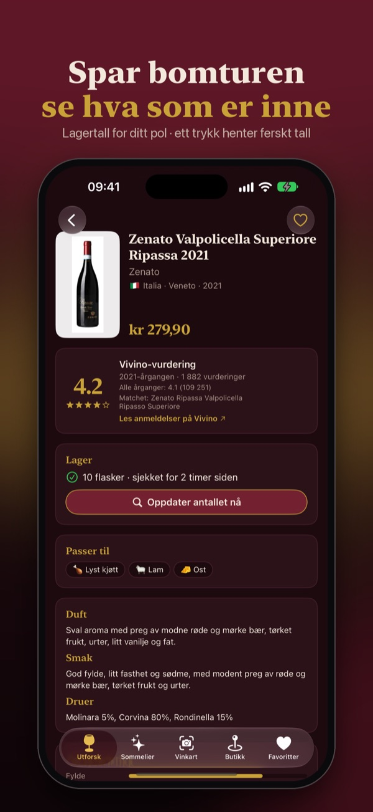
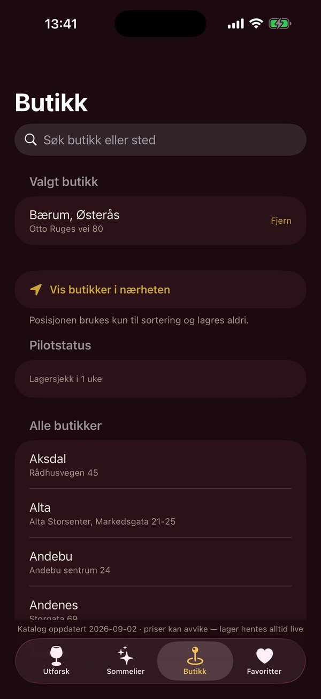

What is the best wine your local store has in stock?
Pick your Vinmonopolet store in Norway or Systembolaget store in Sweden and see everything on the shelf, ranked by ratings from thousands of other wine lovers. Ask in plain language: “red wine for lamb under 250 kr”. At the restaurant: photograph the wine list.
Get it on the App StoreiPhone with iOS 17 or later · the sommelier answers online, with on-device rules as backup · app interface in Norwegian (Norway) or Swedish (Sweden) · Android? Tell us
- The whole store range
- Live bottle counts
- On-device sommelier
- Independent of the monopolies
- Norway and Sweden





Your store's shelf, ranked
What VinGPT helps with
Not the whole country. The store you actually go to, and what is on its shelf right now.
Your store's shelf, ranked
What is in the store you go to, sorted by rating. Filter by price, wine type, country and what you are eating.
Live bottle counts
Tap “Check stock” to see how many bottles the store has right now. Sold out? The app shows the nearest store that has it.
Ask the sommelier
“Something good for tacos under 200?” The answer is wines that are in your store, with a reason per bottle. Runs on the phone, nothing is sent anywhere.
Scan the wine list
Photograph the restaurant's wine list and see the wines ranked within what you want to pay. The image is read on the phone.
Alcohol-free, sorted by colour
Red, white, rosé and sparkling without alcohol, ranked like everything else. Flip the switch in advanced search.
Favourites without an account
Mark wines you want to remember. They follow your own iCloud to your next phone, no sign-in.
How it works
- Pick a storeThe one you shop in, or the nearest right now.
- See the shelf rankedTop ten first, the rest under “Show more”. Filter by price and type.
- Ask or scanAsk the sommelier a question, or photograph the wine list.
See the app
Next time you are at the store
Open the app, pick the store, see what is best on the shelf.
Get it on the App StoreFrequently asked questions
Which countries does VinGPT work in?
Norway, with every Vinmonopolet store, and Sweden, with every Systembolaget store. They are two separate apps on the App Store: VinGPT for Norway (Norwegian interface) and VinGPT for Sweden (Swedish interface). Wine names, ratings and prices are the same whatever language you speak.
Where do the ratings come from?
From thousands of ordinary wine drinkers who have rated the wine, not from a single critic. The app shows the average and how many people stand behind it, and never shows a number it does not have.
Why does the app show different stock than the store has?
The stock list (which wines the store carries) is cached for up to a day and marked with when it was last checked. Bottle counts, however, are always fetched live when you tap “Check stock” on a wine. Pull down the list to refresh the whole stock list.
Why does a wine have no rating?
Ratings exist for the most sold wines in the store range. Wines in the order-only range and brand-new vintages may lack one — the app then says “No rating found” instead of guessing.
The sommelier answered oddly or wrongly
From version 1.3.1 the sommelier answers with the Claude language model through our service, which stores nothing of the conversation; without a connection it answers with the app's own rules on the phone. It can only recommend products that actually exist in the range, and the reasoning next to each wine comes from the monopoly's own descriptions. If an answer is still wrong, tap thumbs down and tell us what was off — it helps a lot.
Does the app need an account?
No. No sign-in, no registration. Favourites follow your own iCloud automatically.
Is VinGPT part of Vinmonopolet or Systembolaget?
No. VinGPT is an independent app with no ties to either monopoly. The app does not sell alcohol and has no purchase function.
Is there an Android version?
Not yet, iPhone only. Want it on Android? Tell us by email and we will let you know if it happens. It also helps us see whether it is worth building.
Publisher
VinGPT is published by Siphon AS (Norwegian org. no. 998 610 672), Jacob Aalls gate 14A, 0368 Oslo, Norway.
Contact
Feedback and bug reports: support.vingpt@vingpt.no
(or use “Send feedback” in the app — the version and catalogue date come along automatically).